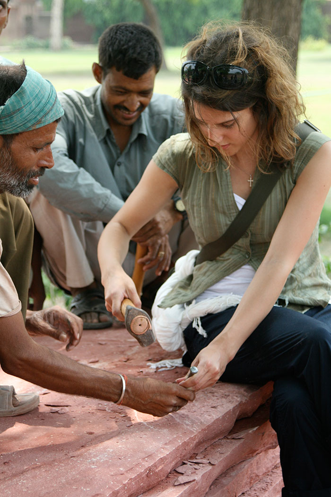
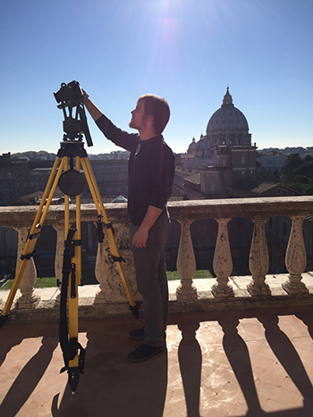
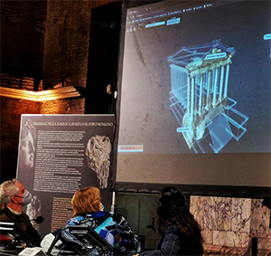

|
||||
|
 Team member and local craftsmen at Agra in 2012  Team member at the Cortile del Belvedere in 2016
3D Scanning team at the Roman Forum in 2010  Dr. Krusche presenting the visualization tool |
|
In partnership with the Archaeological Survey of India and UNESCO the Notre Dame team documented two of the Mughal tombs of Agra, India. The project encompassed a detailed analysis and architectural study of the tombs of Jalaluddin Mohammad Akbar in Sikandra and Tomb of Itmad-ud Daulah in Agra.
Mumbai Urbanism and Climate Study, 2013, 2020, 2021Prof. Krusche lead the mapping of Mumbai started by the previous year’s class and worked with AutoCAD to create a site plan of four historic districts in the city center of Mumbai. In teams of two, the teams focused on Malabar Hill, Marine Lines, Churchgate, and the Fort District.
The Roman Forum Documentation, 2010 - present The longest running project of the DHARMA team with multiple expeditions to the site in 2010, 2011, 2012, 2013, 2014, and 2016. The work has been published with multiple papers, articles, and other derivables.
In Summer 2015, DHARMA team conducted a three-week long field study for documentation and damage assessment of the Taj Mahal in Agra, India.
The Cortile del Belvedere, 2016 - present DHARMA team documented the 16th century courtyard’s structures and statues with Leica 3-D high-speed, long-range, laser scanners and hand measure drawings for the Upper Cortile del Belvedere.
On April 12, 2019, DHARMA released the Roman Forum App, with 10,000 downloads and growing enabling visitors to interact with 3D reconstructions of the monuments as they tour the site.
Prof. Krusche’s book, “From Pen to Pixel Studies of the Roman Forum and the Digital Future of World Heritage“, was published in March 2021.
Digital Visualization of the Roman Forum Prof. Krusche explores with Margaret Zhang the possible reconstruction theories of the Roman Forum based on site analysis and the overlay of first hand documentation of the site.
Sea Level Rise near Mumbai, 2021 DHARMA collaborates with Dr. Benjamin Hamlington at the Jet Propulsion Laboratory at NASA to investigate sea level rising conditions along the coasts of Mumbai, culminating various data sets to give information that allows combined simulation and impact analysis on Mumbai's waterfront.
High-detail Point Cloud Data Visualization, 2021- present The data visualization team, lead by Dr. Chaoli Wang from Computer Science & Engineer, commenced research project on the point cloud visualization structure for the Roman Forum.
|